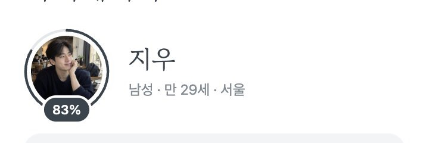
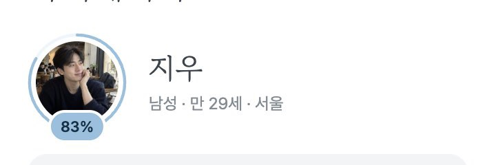
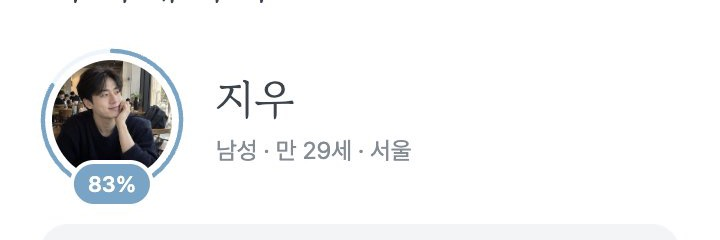
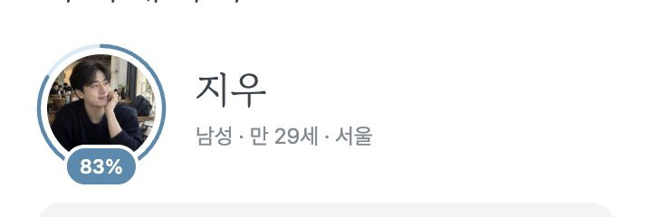
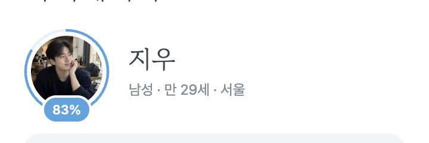

마이페이지 · 채움 링 밝은 파랑
- 지금: 링 · % 알약 모두 cool-neutral-800(진한 회색), 빈 부분 cool-neutral-100.
- 바꾸는 곳: 링 채운 부분 · 빈 부분 · % 알약을 같은 파랑 계열로. 링 굵기 3 · 알약 모양은 그대로.
- C1 sky-300: 가장 밝고 부드러움. 흰 글자가 안 읽혀서 알약은 sky-300 바탕 + sky-900 글자.
- C2 sky-400: 밝은 하늘색. 알약 흰 글자 대비가 약해요(약 2.7:1).
- C3 sky-500: 브랜드 파랑과 가장 가까운 차분한 파랑. 흰 글자도 읽혀요(약 3.8:1).
- C4 #4FA3E0: 토큰 밖의 맑은 파랑 — 가장 "밝은 블루" 느낌이지만 지금 팔레트(물 빠진 sky)보다 채도가 높아 혼자 튀어요. 흰 글자 대비 약 2.8:1.
색 시안

지금cool-neutral-800
C1sky-300 · 알약 글자 sky-900
C2sky-400
C3sky-500 · 빈 부분 sky-100
C4#4FA3E0 (토큰 밖)